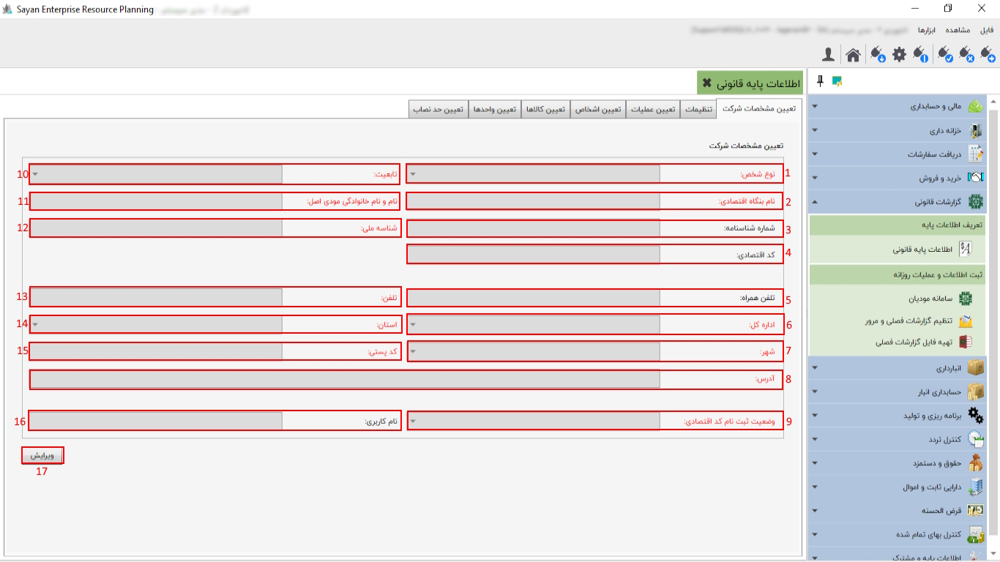

1)نوع شخص:نوع شخص را ازبین گزینه های حقیقی ،حقوقی انتخاب نمایید
2)نام بنگاه اقتصادی(نام شرکت):نام مجموعه تان را به همان صورت که در کارپوشه قید شده است وارد نمایید 3)شماره شناسنامه:در این قسمت شماره شناسنامه مودی را وارد گردید(الزامی نیس) 4)کد اقتصادی :در این فیلد اگر نوع شخص حقیقی مشارکت باشد کد اقتصادی 11 رقمی وارد کنید. در صورتی که نوع شخص حقیقی انفرادی باشد ،کد اقتصادی 14 رقمی مورد نیاز است. اما اگر نوع شخص حقوقی باشد،نیازی به وارد کردن کد اقتصادی نخواهد بود زیرا از همان شناسه ملی که وارد کرده اید،استفاده میشود. 5)تلفن همراه:در این قسمت تلفن همراه خود را وارد کنید(الزامی نیست) 6)اداره کل:در این قسمت اداره کل مودی را وارد نمایید 7)شهر:در این یخش شهر مودی خود را وارد کنید . 8)آدرس:در این بخش آدرس شرکت رابین کاراکتر 15 الی 70 کاراکتر وارد نمایید. 9)وضعیت ثبت نام اقتصادی: در صورتیکه مراحل تشکیل پرونده مالیاتی شما کامل شده باشد (گام 4 ) شما دارای نام کاربری می باشید و در غیر اینصورت وضعیت ثبت نام خود را از بین گزینه های موجود مشخص نمایید. 10)تابعیت (نوع شرکت):ایرانی یا غیر ایرانی بودن مودی یا شرکت مشخص گردد. 11)نام و نام خانوادگی مودی اصلی (مدیر عامل):در صورتیکه مجموعه شما به صورت مشارکت مدنی باشد نیاز هست نام ونا م خانوادگی نماینده را وارد نمایید. 12)کد ملی یا شناسه ملی:کد ملی 10 رقمی مودی اصلی و یا شناسه ملی 11 رقمی شرکت وارد شود. 13)تلفن :تلفن خود را وارد نمایید. 14)استان :استان حوزه مالیاتی را وارد نمایید. 15)کد پستی:کد پستی دقیق محل شرکت را وارد نمایید. 16)نام کاربری یا کد رهگیری:این فیلد با توجه به وضعیت ثبت نام اقتصادی ،نام کاربری یا کد رهگیری خواهد بود که دقیقا طبق اطلاعاتی که وارد کارپوشه میشود تنظیم نمایید. 17)ویرایش:در این بخش میتوانید اطلاعات خود را ویرایش و ثبت نمایید. برای آگاهی بیشتر از نحوه ی استفاده از امکانات این سیستم به راهنمای زیر شاخه های آن مراجعه فرمایید.